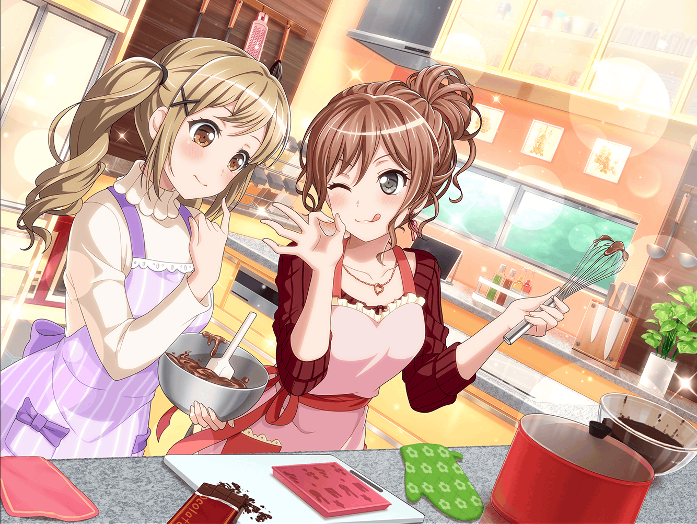

バレンタイン当日 放課後
羽丘女子学園 屋上
リサ
あっ、いたいた、友希那～！
探したよー
友希那
……リサ？
リサ
ホームルームが終わって、すぐに友希那の教室に
行ったんだけど、いないんだもん。
もう帰っちゃったのかと思ったよー……
友希那
よくここがわかったわね？
リサ
そういえば今朝、放課後は作詞をするって言ってたから、
静かなここかなーって思ったんだ☆
リサ
さすがアタシ！
友希那のことなら、
やっぱりなんでもお見通しって感じ？
友希那
……そんな、わざわざ言うことないじゃない……
それで、なんの用事？
今日は練習日ではないはずだけど……
リサ
そんなことはわかってるって！
そうじゃなくって、今日はバレンタインでしょ？
リサ
だから……
はい、これ♪
友希那
これは……チョコ？
リサ
そそっ！
しかも、アタシの手作りっ！
友希那
そう……
リサ
ふぅ……
教室にいなかったから、渡せないかもって
一瞬焦ったけど、今日中に渡せてよかった♪
友希那
ふふっ……
こういうイベントごと……昔からリサは好きよね？
リサ
だって！
みんなにアタシのお菓子作りの腕前を披露できる、
絶好の機会じゃん☆
友希那
いつも練習前に手作りクッキーを持ってくる人が、
よく言うと思うわ
リサ
それに、バレンタインって、最近は感謝の気持ちを込めて、
チョコを贈り合ったりするらしいからさ
リサ
一番大事なRoseliaのメンバーには、
ちゃんと感謝の気持ちを伝えとかなきゃ、って思ってね☆
友希那
そう……
感謝の気持ち、ね……
友希那
…………
リサ
……どうしたの、友希那？
急に黙っちゃったけど……
友希那
考えてみたら、いつもリサから、
何かをもらってばかりね、私って……
リサ
えっ！？ そ、そんなの気にしないでよー。
やだなー、そんな仲じゃないじゃん、アタシ達♪
友希那
それはわかっているけど……
私もたまには何か贈った方が……
リサ
ちょ、ちょっといいって、そんなの！
友希那
そういえば、カバンの中に……
リサ
……ん？
友希那
……あったわ
友希那
リサ……
もし良かったら、これ……もらってくれないかしら？
リサ
え？ な、なに？
友希那が……アタシに……チョコ！？
友希那
と言っても、本当にたまたま
持っていた物だから、気にしないで。
チョコレートの、お返しにあげるわ
リサ
んんっ！？
これって……アタシのお気に入りのチョコじゃん
友希那
リサ、いつもそのチョコレートを美味しそうに
食べているでしょう？
リサ
……み、見てたんだ？
友希那
一緒にいれば、それぐらい気づいて当然よ
リサ
そ、そっか……
友希那ってあんまりチョコとか食べないじゃん？
カバンにチョコが入ってるって、結構驚いちゃった……
友希那
うふふ……
あんなに美味しそうに食べていたら、
気になるものよ
リサ
そ、そっか～。
けど、なんか嬉しいね☆
友希那
嬉しい、って……
どういうことかしら……？
リサ
だって、アタシの存在が友希那に、
ちょっとでも影響を与えられてる……ってことじゃん？
友希那
な、なにを言ってるの？
影響って……
そんな大げさなことじゃないと思うのだけれど……
友希那
たかが、チョコレートの話よ？
リサ
たかがチョコレートでも、
嬉しいものは嬉しいんだって！
リサ
へぇ～、友希那がチョコを……
そっかぁ～、ふふふ……っ♪
友希那
ね、ねぇ……？
それで、このチョコはいるの？ いらないの？
いらないなら、別にいいけど……
リサ
わあ！ いるいるいる！
いるに決まってるじゃ〜ん！
友希那
それじゃあ……はい
リサ
ありがと～、友希那！
友希那の気持ち、確かに受け取りましたー☆
友希那
だから、そんなに大げさなものじゃないんだってば……っ
リサ
あ！ そういえばさ、せっかくこのチョコ買ったのに、
友希那は食べなくていいの？
友希那
私はいいわ。
また買えばいいんだから……
リサ
それじゃあさ！
せっかくだから、このチョコをはんぶんこしない！？
友希那
……えっ？
はんぶんこ……？
そ、そんなことしなくたって、私はまた買うから……
リサ
いいじゃんいいじゃん！
ホントに美味しいんだから！
一緒に食べようよー♪